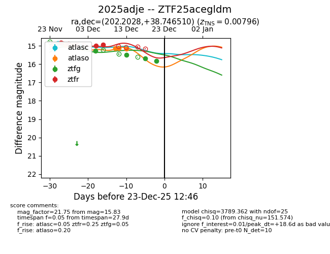
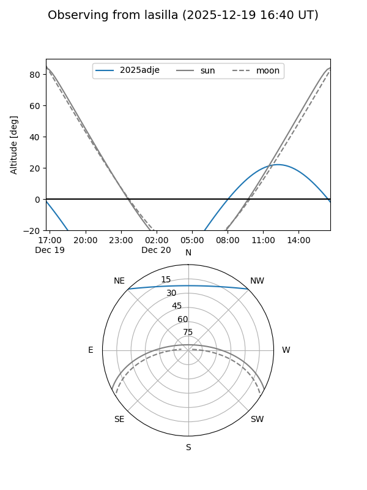
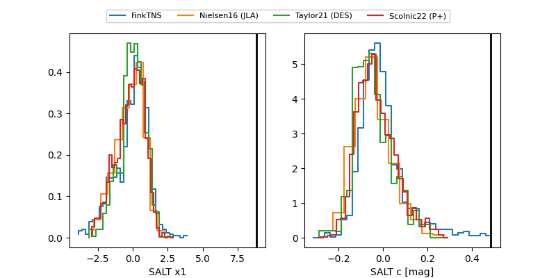

2025adje
Target 2025adje at 2025-12-18 14:17
Aliases and brokers:
FINK: fink-portal.org/ZTF25acegldm
Lasair: lasair-ztf.lsst.ac.uk/objects/ZTF25acegldm
ALeRCE: alerce.online/object/ZTF25acegldm
TNS: wis-tns.org/object/2025adje
YSE: ziggy.ucolick.org/yse/transient_detail/2025adje
alt names
ZTF25acegldm (ztf,fink_ztf)
2025adje (tns,yse)
Coordinates:
equatorial (ra, dec) = 202.2028,+38.74651
equatorial (HMS+DMS) = 13:28:48.66,+38:44:47.44
galactic (l, b) = (91.3680,+76.00159)
Photometry
last atlasc=15.06, atlaso=15.15, ztfg=15.69, ztfr=14.95
2 atlasc, 6 atlaso, 5 ztfg, 5 ztfr detections
Lightcurve

Visibility


Additional plots
